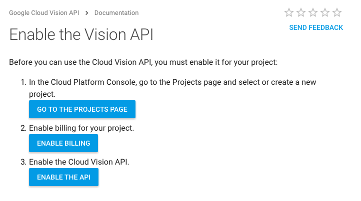
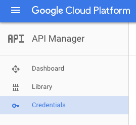
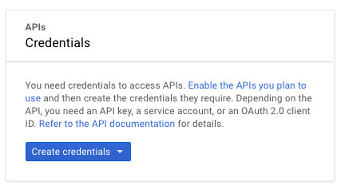
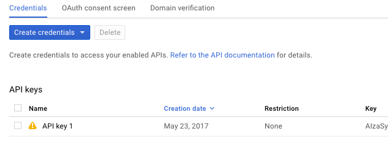
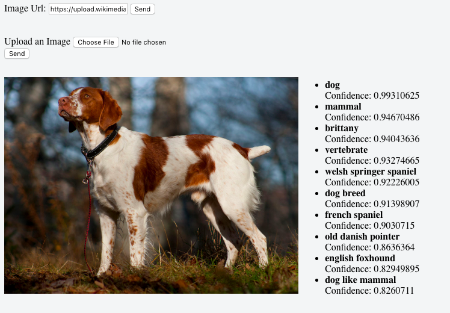
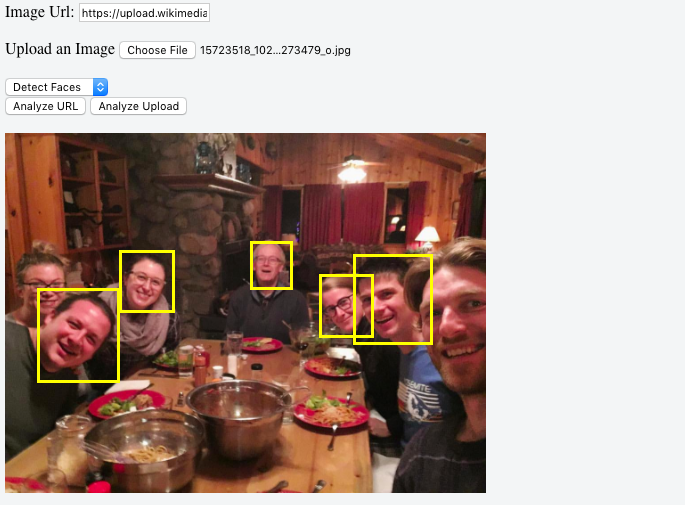

Google Vision API Walkthrough
A Guide to Using Google Vision's API with Javascript-
Google provides an enormous array of useful APIs on its Cloud Platform. Google Cloud Vision is one of them. It's a computer vision API that allows user to analyze images in various different ways. This guide is meant as a walkthrough to help you build a tool to send images to the API and parse the responses, all using Javascript. By the end you'll have built a small website that will allow a user to either submit an image URL or upload one from their computer, and send it to Google Cloud Vision with either one of two requests, Label Detections or Face Detection.
You can read more about about the API from Google's Official Documentation.
This guide is broken up in the following steps:
We'll assume a basic understanding of manipulating the DOM with Javascript, parsing JSON and the concepts behind URI and Base 64 encoding.
Now let's begin!
Google Cloud already has thorough documentation on obtaining an API key. The following is intended as a supplement to their documentation.
Step One: Proceed through the first three steps of enabling the API. You can get there using this link.

Step Two: Once the API is enabled you need set up Credentials to access the API key.
Go to API Manager and select “Credentials” to create credentials and get your API key.


You will then have your API key!

Now that we have our API key, we can use Javascript to send images for the computer vision algorithm to analyze. We do this using POST requests. The official documentation contains an overview of the API requests, which you can read here. But we'll show exactly how to write our own.
The most straight-forward way to send out POST requests is to use the XMLHttpRequest() constructor. This constructor creates an object that allows us to send asynchronous requests from a client (i.e. your web browser) to a server. In this case, the server we are sending to is Google's Cloud.
In order to create and send our requests, let's write a function called googleVisionRequest which takes an object, payloadObj that will compose the body of the request, and also accepts an object button, which will allow us to disable the submit button while awaiting our response.
Here's what it will look like:
Let's go through each line:
var req = new XMLHttpRequest();req.open("POST", "https://vision.googleapis.com/v1/images:annotate?key=" + yourApiKey, true);true specifies that the request be asyncronous.req.setRequestHeader("Content-Type", "application/json");req.addEventListener("load", function() {button.disabled = false; if (req.status >= 200 && req.status < 400) { displayResponse( JSON.parse(req.responseText).responses, payloadObj.requests ) displayResponse is a function we will write to "display the response". It will require the original payload object, to help us parse the response.JSON.parse(req.responseText).responses returns the response array. We'll explain more about that later.else{ ... req.send( JSON.stringify(payloadObj) ); POST request body.button.disabled = true; And we're done!
Well, not really. Now we need to go over...
Now you might already be asking yourself, what exactly was payloadObj? Well, the Google Vision API requires a JSON object with a very specific set of properties that tell the server exactly what to do.
Here's an example from the official documentation of the payload to analyze an image sent as a Base-64 encoded data string, asking for the top 10 labels the algorithm returns in order of confidence:
Yikes, that's a lot of arrays of objects of arrays of objects. No worries. We'll go through and make sense of it.
requests:requests array is composed of two properties:
image: specifies the source image. You can send a URI of a publicly accessable image, or send the image itself as a Base-64 encoded string. However these two image source types have different key-value pairs:
image: object needs to contain only one property, source:, which itself is an object that contains the property imageUri:, which contains the image link. image: object inside the requests: object would look like this:
image: { source: { imageUri: "http://..."} }image: object just needs to contain the property content: which itself contains the data string, like above.features: is an array of objects that contain the specifications for each type of detection we would like Google Vision to perform on our image. The API has many different detection types, but we will only focus on LABEL_DETECTION and FACE_DETECTIONNow that we've covered the request, let's go over the response
The response contains a JSON string with the property responses:, which is an array of responses for each request object element we sent in the requests: array. The responses for each detection type are all slightly different. Because we'll only be sending LABEL_DETECTION and FACE_DETECTION requests, we'll just go over those.
labelAnnotations: is an array of objects that contains the response for our LABEL_DETECTION request. The array contains an element for the number of maxResults requests. Each object in the array contains the properties: mid:, description: and score:. Where mid: is one of Google's "machine-generated identifiers", description: is the label that describes the image and score: is a measure of confidence given by the algorithm represented as a number between 0 and 1. faceAnnotations: is an array of objects that correlate to the number of faces recognized in a FACE_DETECTION request. These objects contain a wide array properties, the likelyhood of emotion detected for each individual and the position of individual face "landmarks" such as the eys, nose, etc. We will just be using boundingPoly: an object that contains the vertices of a square around each face. Now that we've covered the request and response, let's create some functions to generate the request body object and display the response.
With the concepts covered, its time to build a website that will send an image to the Google Vision API for label detection. Because we want to be fancy, we'll allow the user the to either provide a URL of an image, or upload an image from their computer.
This part is pretty easy, as Javascript is doing all the heavy lifting. All we need is an input to receive and submit a URL, an input to select and submit a file, an img element to display the selected image, and a div element to display the labels.
With our HTML up and running, we can work on some functionality that will build the request body object base on our user's input. Let's start by creating an object called payload. In it, we just need to initialize the requests: array.
Now we need to write a function to populate the request: array in payload with the appropriate information.
Since we're allowing the user to submit either a URL or an uploaded image file, let's create two functions, addUrlRequest() and addBase64ImgRequest() that call a more general function addRequest().
As you can see, addUrlRequest() and addBase64ImgRequest() create the specific objects required for the two different API requests. They then pass those objects to addRequest() which places them in the image object of the request array. It takes the rest of the relevent information and pushes it to our API request array.
For the moment, we're specifying the request type as only LABEL_DETECTION, but we've written these functions so that can easily be changed.
With the request body builder functions complete, we can now receive the user's input and send our request to the server.
At this point all we need to do is get that user submitted URL, pass it to addUrlRequest() along with the number of responses and then pass the payload to googleVisionRequest(). We then clear out the payload requests so that our next POST request doesn't include the old information.
The code to send the image data from a user's uploaded image is very similar, but requires encoding the image file into a Base-64 string. To do that, we use the FileReader() constructor and use its .readAsDataURL() method.
Mozilla provides an example we can conveniently borrow, to place the user's uploaded image into our img element as soon as the user selects an image from their computer. When the file loads, we can pass the already encoded string to our addBase64ImgRequest().
NOTE:
We have to split the encoded Base-64 string around the comma when we pass it to addBase64ImgRequest() using reader.result.split(",")[1] This removes the header specify the data type and encoding. Otherwise, our data string would begin with "data:image/jpeg;base64,... and the Google Vision API expects ONLY the Base 64 string.
With that in place, we can write our handler to send the Base 64 request when the user clicks Submit.
Now that we've sent a proper request and gotten a response, lets get to work on that displayResponse function. We don't need anything too fancy, as we just need to populate a div with an array's object's key-value pairs
As you can see, our function accepts the responses: array and the requests: array, and populates the div with id="responseDiv" with the responses we're interested in. It also checks to see whether we sent a URL, or Base-64 image data. If its the former, it adds that url as the source of our img element.
And we're done! You should now be able to send images to Google's Computer Vision API. Here's what the final product should look like.

With the core functionality complete, it's time to add face detection. The Google Vision API provides a lot information with the FACE_DETECTION request. However we'll just be identifying the faces and drawing boxes them in the picture. Full documentation on this request can be read about here.
The only addition to our HTML is to add a select element for the user to specify the request type.
We then modify our addRequest function. Instead of receiving a "requestType" from its calling functions, we just get the request type directly from the select element's value.
As was mentioned earlier, the response from DETECT_FACES request comes with a lot of information. The property containing this information is called faceAnnotations. It is an array of objects, one for each face detected in the image. These objects contain all the properties detected for each face. boundingPoly: has a property inside called vertices which contains an array of the pixel location for each corner of the bounding box surrounding the detected face. This is given as an x, y coordinates, measured from the left and top of the image for x and y respectively.
With this knowledge, we can create a function that overlays div elements around each face on the img element. We'll give the divs a yellow border for visibility.
This function may seem complicated at first, but it will quickly makes sense as we go through it.
faceAnnotations array, and iterate through it using a for loop.vertices of each bounding box. These are represented as an array of objects, each with an x and y propertyimgDiv will be used to place each div surrounding each face. imgPreview simply being a container div for the img elementimg element and give it the same source as our preview. However we will not be adding this to the DOM. Instead this is to get the ratio between our smaller preview image, and the original image itself. That way, we can place each bounding box accurately in the preview image.div, insert the div inside the imgContainer and apply the style attribute containing the dimensions and details.We now simply add this function into our original displayResponse() function using an if/else statement to check whether the response contains labelAnnotations or faceAnnotations. And that's it!
After you're done your new website should work like this:
